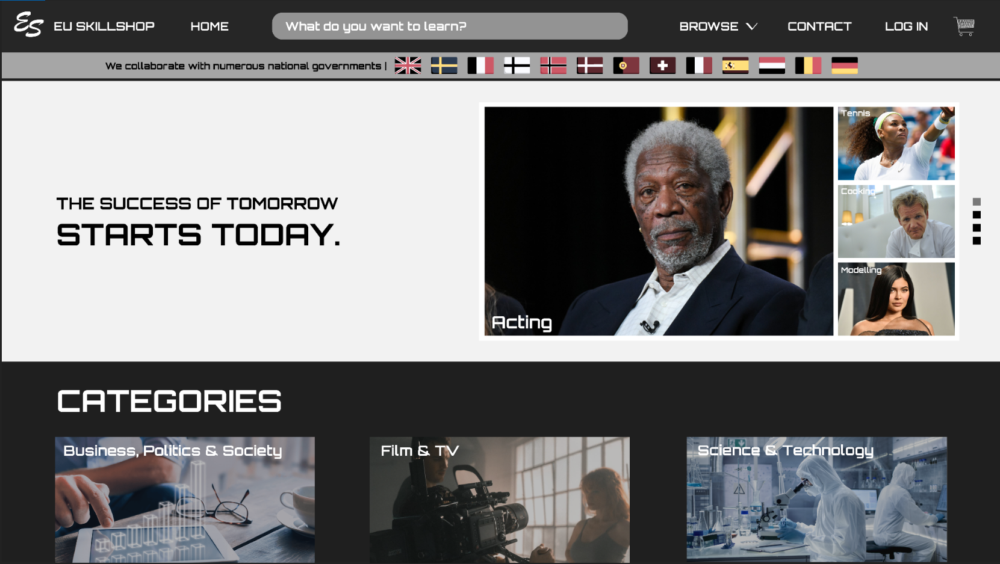

Content - 21 Oktober 2020
Bij het vak Content kregen wij de opdracht om een (fictieve) webshop te maken. EU Skillshop is een site waar je verschillende skills kan kopen om in je systeem te zetten. Zo kan je jezelf elke skill aanleren die je maar wilt! Wil je heel goed kunnen voetballen? Download de skill en voila! Tijdens het vak Content heb ik geleerd hoe ik informatie netjes en overzichtelijk kan weergeven op een website. Zo zie je bijvoorbeeld in de afbeelding dat alles goed is opgedeeld in verschillende categorie en er niet te veel op de home pagina staat.